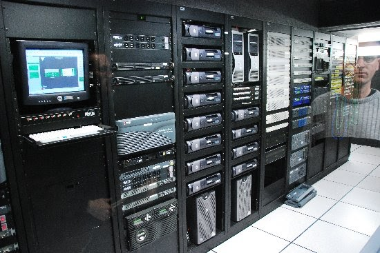
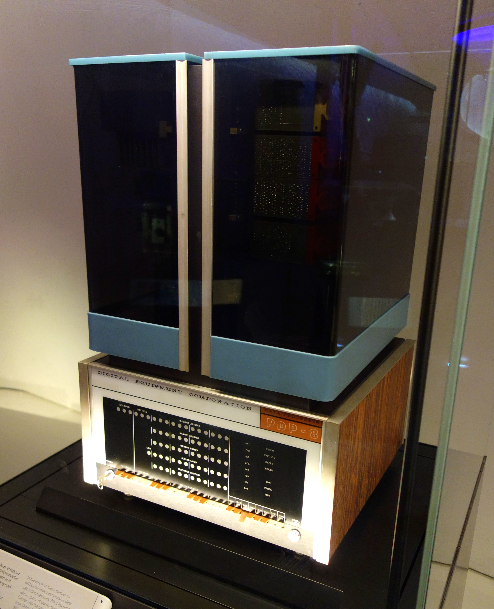
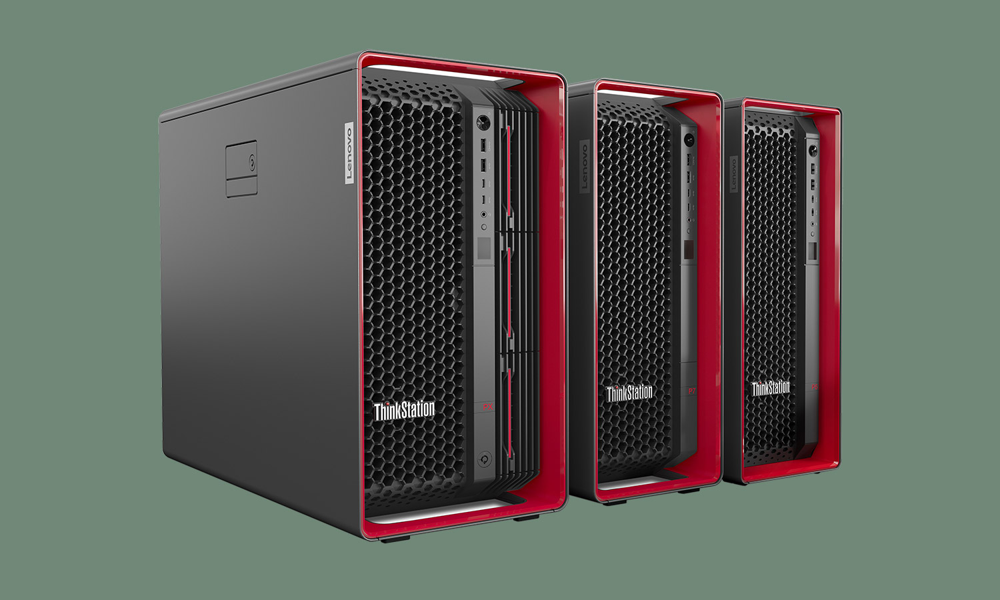

Comparative Study on Different Types of Computers
Computer
A computer is an electronic device or machine that is capable of accepting data (input), computing and processing data according to specified rules, creating information (output), and storing that information in various forms (Williams, 2021). The importance of computers to humans is exceptionally high. These devices help us solve problems that we have faced since the time of invention. The word "computer" means something that computes for performing calculations automatically, but today computers are more advanced and merely comparable to a calculator (Kanwal, 2024). In this present time computers are very important to people for everyday use. It has been an essential part of every profession and important for gathering information, researching, and various activities.
Discussion
There are different types of computers that are available these days. Each type varies in terms of functionality and data processing, showing distinct features and output results. They also vary in different sizes, capacities, characteristics, purposes, and data-handling aspects. The actual machinery of computers is called hardware, while the instructions and data are called software. All general-purpose computers contain a CPU (Central Processing Unit), memory, storage devices, input devices like a keyboard and mouse, and output devices like a monitor and printer. These components enable the computer to work efficiently and perform tasks effectively. These components work together to process information, execute commands, and produce meaningful results that users can understand and utilize. As technology is continuously getting better, computers become more powerful, compact, and efficient while continuously performing a wide range of tasks within different fields of interest.
Comparison and Contrast
Comparison and contrast of the following according to processing speed, memory capacity, power consumption, minimum and usage:
a. Mini Computer
A minicomputer is a medium-sized system that falls between microcomputers and mainframes. In comparison, a minicomputer provides a medium-scale processing speed in the range of hundreds to thousands of MIPS, and memory from tens to hundreds of gigabytes; thus, it can support multiple users at the same time. It consumes average power compared to larger ones and requires a stable environment with a multi-user operating system like UNIX. Minicomputers are widely used in laboratory applications, small enterprise environments, and control systems in industry due to their requirement of fast processing of data and shared access among many users.
b. Micro Computer
A microcomputer, which can be referred to as a PC, is designed for single use and much lower processing speed-2-4 GHz with reduced memory capacity-8-64 GB in comparison with other kinds of computers, as mentioned by GeeksforGeeks 2025. Therefore, much less power consumption-ranging between 50 to 300 watts-definitely makes it efficient because a lot of dollars are saved by investing in a microcomputer. At the minimum, it requires a single-user operating system: either Windows, macOS, or Linux. Microcomputers are the major computers used in homes, offices, and schools for general purposes such as browsing, word processing, and entertainment, according to Linda 2024.
c. Workstation
A workstation is a single-user, high-performance computer with superior processing speed (3–5 GHz) and large memory capacity (32–512 GB), suitable for professional applications. It requires moderate power consumption, largely because of high-end CPUs and GPUs. However, in return, it provides very good computational performance, which can be applied in many specialized work roles. Among the minimum requirements, advanced cooling systems and strong components are inevitable to manage and execute resource-intensive software applications. Generally, workstations have traditionally been placed within an engineering, animation, or computer-aided design (CAD) context where there was some need for precision and computing strength.
d. Server
A server is a multi-user system designed to handle multiple requests and provide services to other computers over a network. It has high processing speed-2 to 4 GHz per core-and massive memory capacity, reaching up to hundreds of GB or even several TB to support simultaneous operations (IBM, 2024). Because it operates for extended periods, often 24/7, its power consumption is higher than most computers; it requires reliable cooling systems (U.S. Department of Energy, 2023). These have been applied in web hosting, database environments, and cloud storage where large amounts of data have to be managed and the network ensured available, among others (Types of Computers, 2023).
Table 1: Technical Specifications
| Types of Computers | Name/Brand | CPU | Memory | Processing Speed | Calculating Power | Working Principle | Energy Consumption | Field of Use |
|---|---|---|---|---|---|---|---|---|
| Supercomputer | Fugaku, IBM Blue Gene | Thousands of multi-core processors | Hundreds of terabytes to petabytes | 1015-1018 FLOPS | Extremely high - performs quadrillions of calculations per second | Parallel processing and high-speed computation for scientific data | Very high (up to 30 MW) | Scientific research, climate modeling, and complex simulations |
| Mainframe Computers | IBM zSeries, Unisys ClearPath | Multi-core, multi-threaded CPUs | Hundreds of GB to several TB | 100,000–50,000 MIPS | Very high - handles millions of transactions per second | Centralized data handling and multi-user processing | High (hundreds of kW) | Banking, government data centers, large enterprises |
| Mini Computers | IBM AS/400, PDP-11 | Mid-range processors, 16-64 cores | Tens to hundreds of GB | 104-106 MIPS | Moderate - suitable for small organizational tasks | Multi-user, time-sharing systems | Moderate (tens of kW) | Departmental servers, laboratories, industrial control |
| Server | Dell PowerEdge, HPE ProLiant | 8–64 cores, 2–4 GHz | Hundreds of GB to few TB | 2–4 GHz per core | High - manages multiple simultaneous requests | Network-based resource and data management | Moderate to high (hundreds of watts to few kW) | Web hosting, databases, cloud storage |
| Workstations | Lenovo ThinkStation, HP Z-Series | High-end CPU and GPU (8-32 cores) | 32–512 GB | 3–5 GHz | High - optimized for single-user computational tasks | Single-user system for high-performance computing | Moderate (hundreds of watts) | Engineering, CAD, design, animation |
| Micro Computers | Dell XPS, Apple MacBook | 4–16 cores | 8–64 GB | 2–4 GHz | Low to moderate - for general-purpose tasks | Single-user, microprocessor-based operation | Low (50–300 W) | Home, office, education, entertainment |
Table 2: Descriptions and Usage
| Types of Computers | Sample Image | Description | Usage |
|---|---|---|---|
| Supercomputer |  |
A supercomputer is the fastest computer in terms of processing power. It operates at over the highest operational rate for computers. | It is mostly used for complex computations and tasks that require massive data processing such as scientific research, climate modeling, and more. |
| Mainframe Computers |  | Mainframe computers are large and expensive computers that are capable of supporting hundreds or thousands of users simultaneously and process vast amounts of data quickly. | Banking, government data centers, large enterprises |
| Mini Computers |  | A minicomputer is a smaller-sized computer, less expensive than mainframes or supercomputers but still expensive and more powerful than a personal computer. It is capable of supporting numerous users and handling medium tasks. | They are mostly used in smaller business and industrial applications such as departmental servers, laboratories, and database management. |
| Server |  |
It's a computer program or device that allows services to another computer program and its user, called the client. It has three categories: analog computers, digital computers, and hybrid computers. | They are mostly used in web hosting, databases, and cloud storage. |
| Workstations |  | A workstation is specifically intended for technical and scientific applications. It is a single user computer that is connected to a local area network and runs multi-user operating systems. | Engineering, CAD, design, animation |
| Micro Computers |  |
Microcomputers are also known as personal computers (PCs). This is a category of computers designed for individual usage; they are characterized by small size, compact dimensions, processing capability, compatibility, internet access, portability, low cost, and versatility. | They are mostly used in home, office, education, and entertainment. |
References
- Chamanalal, M., (2014). Role of computer applications and tools in the scientific research process. ResearchGate.
- Classification of computers. (n.d.).
- Different types of computers: size, purpose & working principle. (n.d.). Testbook.
- GeeksforGeeks. (2025, July 16). Classification of computers. GeeksforGeeks.
- IBM Corporation. (2024). IBM zSystems technical overview. IBM Technical Whitepaper.
- Kanwal, S., (2024). Computer types. ResearchGate.
- Linda. (2024, December 2). Learn types of computers and their purposes – knowledge. MiniTool.
- Types of computers. (2023, February 20). Research Knowledge and Information.
- U.S. Department of Energy. (2023). Energy efficiency in supercomputing.
- Wang, M. (2020, November 27). Topic B: Types of computers. Key Concepts of Computer Studies.
- Williams, J. (2021, October 27). Expanded Definition of Computer – ENG2575 OL68 Technical Writing, Fall 2021.